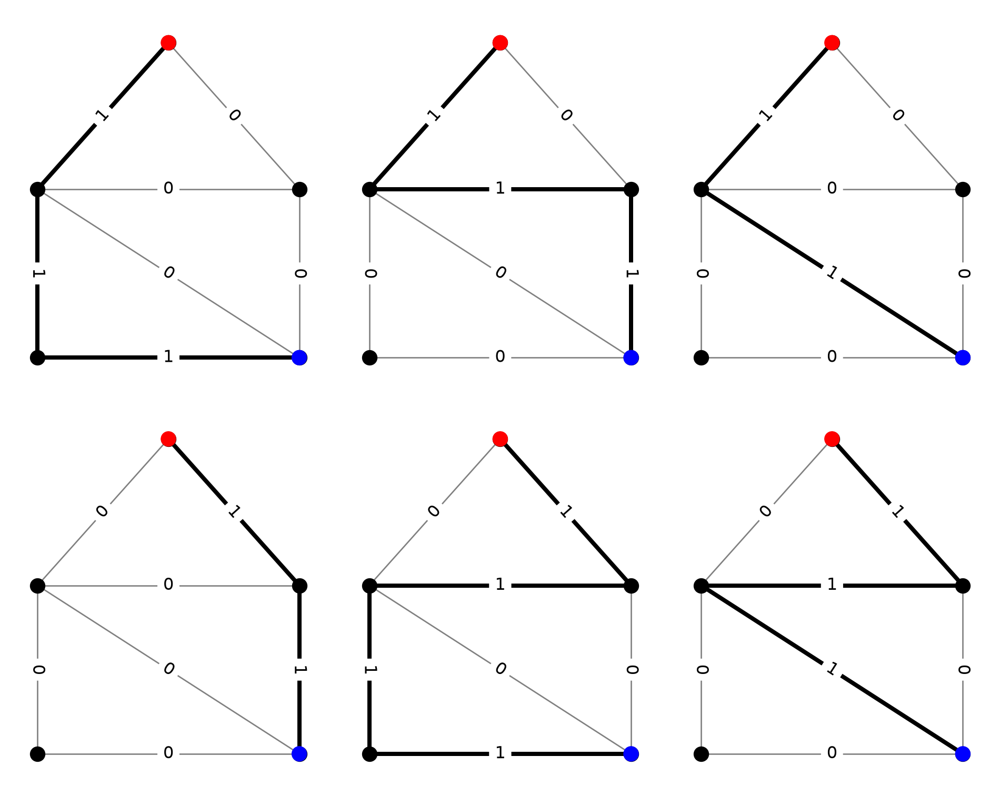
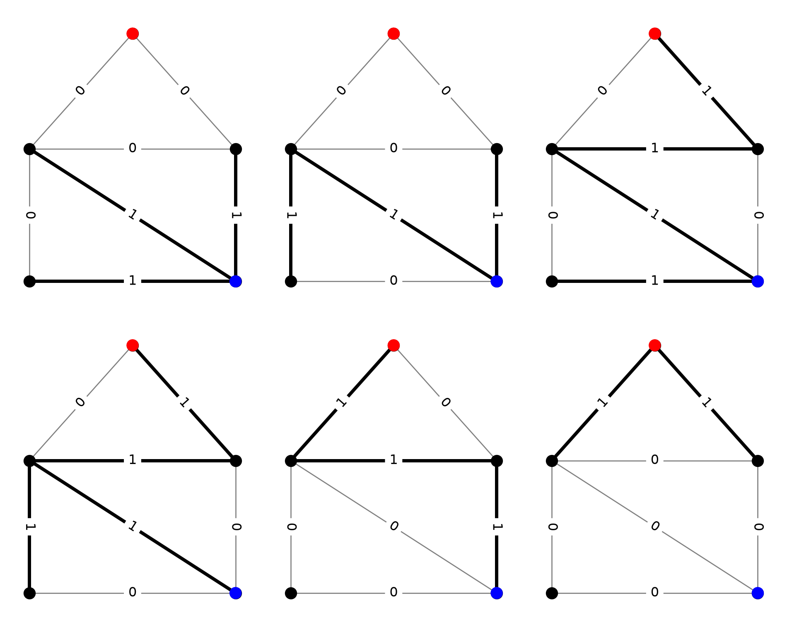
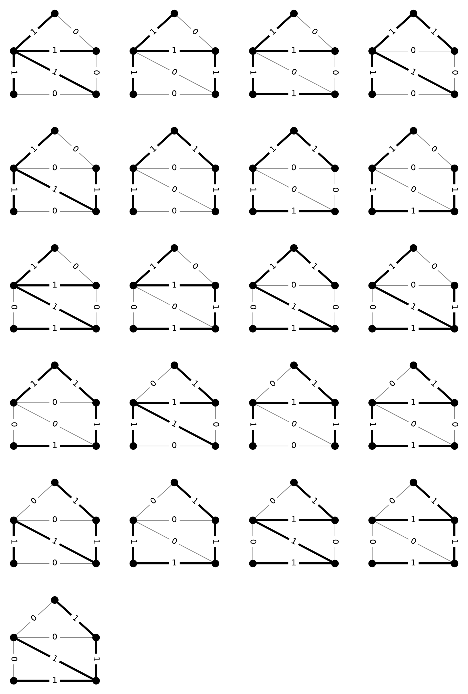
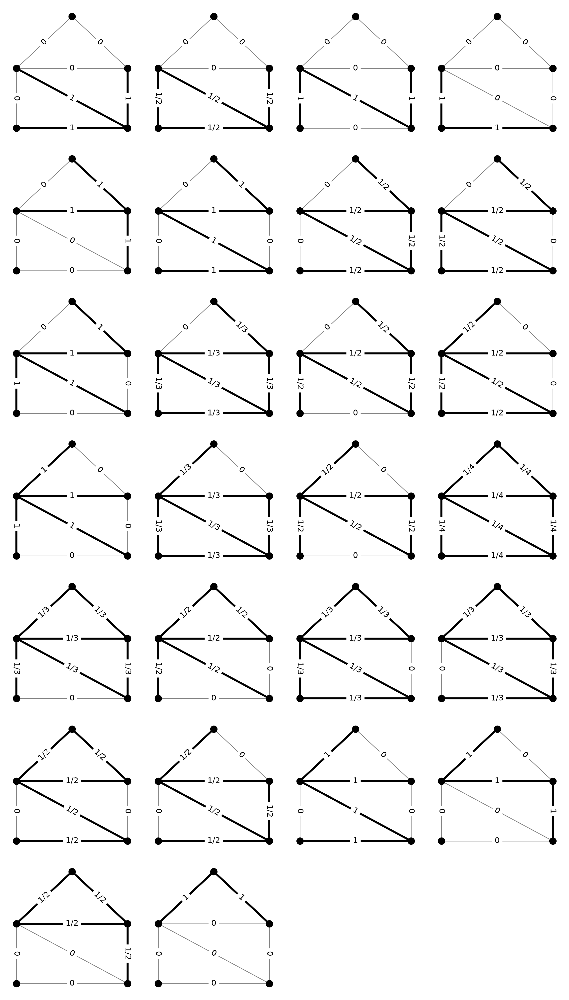
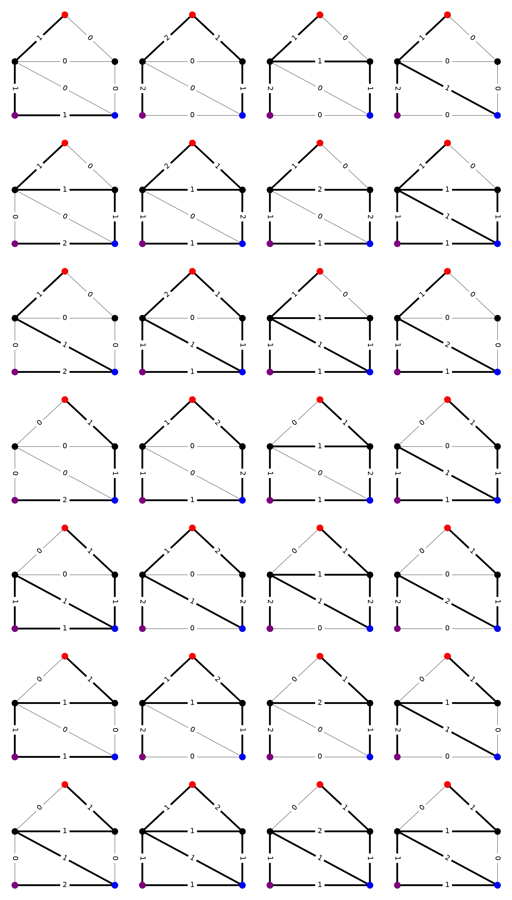
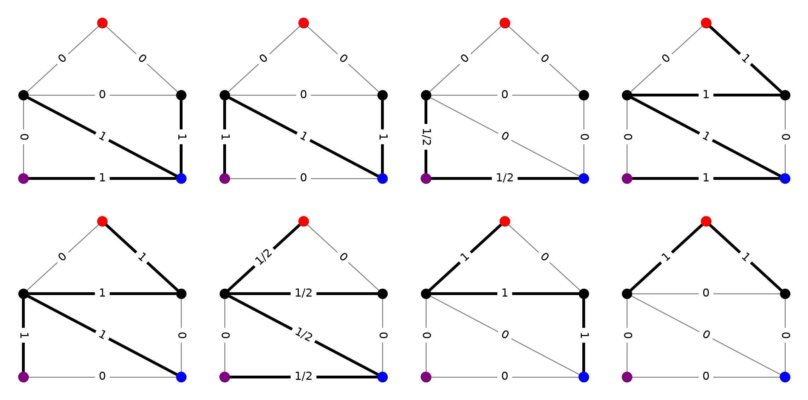

import matplotlib.pyplot as plt
import networkx as nx
import numpy as np
import cdd.gmp as cdd
from discrete_modulus import demo
from itertools import product4 Dual Families
4.1 Introduction
As described in Albin et al. (2019), every family of objects \(\Gamma\) has a natural dual family \(\hat{\Gamma}\), called the blocker of \(\Gamma\). These families are connected through modulus by the property that
\[ \text{Mod}_{p,\sigma}(\Gamma)^{\frac{1}{p}} = \text{Mod}_{q,\hat{\sigma}}(\hat{\Gamma})^{\frac{1}{q}}, \]
where \(p\in(1,\infty)\), \(q=p/(p-1)\) is its Hölder conjugate exponent, and where \(\hat{\sigma}=\sigma^{-\frac{q}{p}}\). Moreover, the unique optimal density \(\rho^*\) for the first modulus problem and \(\eta^*\) for the second are related as follows.
\[ \frac{\hat{\sigma}(e)\eta^*(e)^q}{\text{Mod}_{q,\hat{\sigma}}(\hat{\Gamma})} = \frac{\sigma(e)\rho^*(e)^p}{\text{Mod}_{p,\sigma}(\Gamma)}. \]
There is a similar duality between \(1\)- and \(\infty\)-modulus, namely that
\[ \text{Mod}_{1,\sigma}(\Gamma) = \text{Mod}_{\infty,\sigma^{-1}}(\hat{\Gamma}). \]
In this case, however, the optimal densities are generally nonunique, making it harder to establish a simple relationship between them.
Interpreting blocking duality correctly requires a specific representation of the objects \(\gamma\in\Gamma\). Namely, we identify each \(\gamma\in\Gamma\) with its corresponding usage vector \(\mathcal{N}(\gamma,e)\). In this way, we think of \(\Gamma\subset\mathbb{R}^E_{\ge 0}\).
Now, the set of admissible densities for the modulus of \(\Gamma\) is defined through a set of linear inequalities
\[ \text{Adm}(\Gamma) := \{\rho\in\mathbb{R}^E : \rho\ge 0, \;\ell_\rho(\gamma)\ge 0\;\forall\gamma\in\Gamma\}. \]
This is a convex set in \(\mathbb{R}^{E}_{\ge 0}\), defined by finitely many linear inequalities and, therefore, it has a finite set of extreme points. The dual family \(\hat{\Gamma}\) is simply this set of extreme points, where we again use the representation of objects by their usage vectors.
On small graphs, the dual family can be computed and visualized using pycddlib.
4.2 Example: Connecting paths
Consider, for example, the set of all paths connecting two distinct nodes \(s\) and \(t\). These are called \(st\)-paths. The following code generates and visualizes a list of all paths on a demo graph. Labels on the edges show values of the usage vector. Edges with positive usage are drawn with thicker lines.
# the demo graph
G, pos = demo.slashed_house_graph()
# enumerate the edges
for i, (u,v) in enumerate(G.edges()):
G[u][v]['enum'] = i
# find all paths between nodes 1 (red) and 3 (blue)
paths = list(nx.all_simple_paths(G, 1, 3))
plt.figure(figsize=(10,8))
# draw the paths
for i, path in enumerate(paths):
plt.subplot(2,3,i+1)
labels = {(u,v):0 for u,v in G.edges}
labels.update({(path[i],path[i+1]):1 for i in range(len(path)-1)})
edges = [(path[i], path[i+1]) for i in range(len(path)-1)]
nx.draw(G, pos, node_size=100, node_color='black', edge_color='gray')
nx.draw_networkx_edges(G, pos, edgelist=edges, width=3)
nx.draw_networkx_edge_labels(G, pos, edge_labels=labels, font_size=12)
nx.draw_networkx_nodes(
G, pos, nodelist=[1, 3], node_color=['red', 'blue'], node_size=100
)
plt.tight_layout()
In order to explore the extreme points of the admissible set, we need to pass between the hyperplane representation (H-representation) and the vertex representation (V-representation) of the set. This is exactly what cdd was designed to do. We begin by forming a list of inequalities defining the admissible set. For cdd, we need to write our inequalities in the form \(Ax \le b\) and then store them in an augmented matrix of the form \([b\;-A]\). We have two types of constraints: \(\rho\ge 0\) and \(\mathcal{N}\rho\ge 1\), where \(\mathcal{N}\) is the usage matrix for the family \(\Gamma\). Rewriting in the proper form, we get
\[ \begin{bmatrix} -I \\ -\mathcal{N} \end{bmatrix}\rho \le \begin{bmatrix} 0 \\ -\mathbf{1} \end{bmatrix} \]
and, thus, the augmented matrix we need to generate is
\[ \begin{bmatrix} 0 & I \\ -\mathbf{1} & \mathcal{N} \end{bmatrix}. \]
# count the number of edges
m = len(G.edges)
# initialize an empty list of rows for the augmented matrix
rows = []
# add rows corresponding to the constraints rho >= 0
for i in range(m):
row = (m+1)*[0]
row[i+1] = 1
rows.append(row)
# add rows corresponding to the constraints N*rho >= 1
for p in paths:
row = [-1] + m*[0]
for i in range(len(p)-1):
i = G[p[i]][p[i+1]]['enum']
row[i+1] = 1
rows.append(row)
# create the polyhedron in cdd
mat = cdd.matrix_from_array(rows, rep_type=cdd.RepType.INEQUALITY)
poly = cdd.polyhedron_from_matrix(mat)
print(poly)begin
13 8 rational
0 1 0 0 0 0 0 0
0 0 1 0 0 0 0 0
0 0 0 1 0 0 0 0
0 0 0 0 1 0 0 0
0 0 0 0 0 1 0 0
0 0 0 0 0 0 1 0
0 0 0 0 0 0 0 1
-1 1 1 0 0 0 0 1
-1 1 0 1 0 0 1 0
-1 1 0 0 1 0 0 0
-1 0 0 0 0 1 1 0
-1 0 1 1 0 1 0 1
-1 0 0 1 1 1 0 0
endNext, we ask cdd to produce the V-representation of this polyhedron.
ext = cdd.copy_generators(poly)
print(ext)V-representation
begin
13 8 rational
1 0 0 0 1 0 1 1
1 0 1 0 1 0 1 0
1 0 0 1 1 1 0 1
1 0 1 1 1 1 0 0
1 1 0 1 0 0 1 0
1 1 0 0 0 1 0 0
0 1 0 0 0 0 0 0
0 0 0 0 0 1 0 0
0 0 1 0 0 0 0 0
0 0 0 0 0 0 0 1
0 0 0 1 0 0 0 0
0 0 0 0 0 0 1 0
0 0 0 0 1 0 0 0
endThe V-representation contains two types of information. Rows beginning with 1 signal an extreme point of the polyhedron, rows beginning with 0 signal an extreme direction. Since the admissible set recedes into the positive orthant, there should always be \(|E|\) of these extreme directions. The extreme points correspond to the objects in \(\hat{\Gamma}\). The following code cell provides a visualization of these objects. Again, we draw the graph with edges labeled by object usage and highlight edges with positive edge usage.
# list of dual objects
dual = []
# loop over extreme points and directions
for row in ext.array:
# skip extreme directions
if row[0] == 0:
continue
# add the vector representation of the dual object
dual.append(row[1:])
plt.figure(figsize=(10,8))
# draw the blocker
for i, obj in enumerate(dual):
plt.subplot(2,3,i+1)
labels = {(u,v):obj[d['enum']] for u,v,d in G.edges(data=True)}
edges = [(u,v) for u,v,d in G.edges(data=True) if obj[d['enum']] > 0]
nx.draw(G, pos, node_size=100, node_color='black', edge_color='gray')
nx.draw_networkx_edges(G, pos, edgelist=edges, width=3)
nx.draw_networkx_edge_labels(G, pos, edge_labels=labels, font_size=12)
nx.draw_networkx_nodes(
G, pos, nodelist=[1, 3], node_color=['red', 'blue'], node_size=100
)
plt.tight_layout()
There are a few important things to note here.
- In this case, the size of \(\hat{\Gamma}\) equals the size of \(\Gamma\). That is coincidence. In general, the two sets will have different sizes.
- In this case, the usage vectors for objects in \(\hat{\Gamma}\) lie in \(\{0,1\}^E\). This is also not a general property. Only certain special families of objects have blockers with that property. We’ll see a counterexample shortly.
- When \(\Gamma\) is the family of \(st\)-paths, \(\hat{\Gamma}\) has a very simple interpretation; it is the family of minimal \(st\)-cuts (with a \((0,1)\) usage matrix). See if you can convince yourself that every minimal \(st\)-cut is present in the figure above. This fact is essentially why the max-flow min-cut theorem is true, and it is sometimes helpful to think of this type of duality as a generalization of max-flow min-cut to other families of objects.
4.3 Example: Spanning trees
Another interesting example of an object family is the family \(\Gamma\) of all spanning trees of a graph (again, with the standard \((0,1)\) usage matrix).
# get a list of spanning trees
trees = list(demo.spanning_trees(G))
# number of columns and rows for plot
ncol = 4
nrow = int(np.ceil(len(trees)/ncol))
# draw the trees
plt.figure(figsize=(3*ncol,3*nrow))
for i,tree in enumerate(trees):
plt.subplot(nrow,ncol,i+1)
labels = {(u,v):0 for u,v in G.edges}
labels.update({(u,v):1 for u,v in tree})
edges = tree
nx.draw(G, pos, node_size=100, node_color='black', edge_color='gray')
nx.draw_networkx_edges(G, pos, edgelist=edges, width=3)
nx.draw_networkx_edge_labels(G, pos, edge_labels=labels, font_size=12)
Here’s the H-representation of the admissible densities.
# count the number of edges
m = len(G.edges)
# initialize an empty list of rows for the augmented matrix
rows = []
# add rows corresponding to the constraints rho >= 0
for i in range(m):
row = (m+1)*[0]
row[i+1] = 1
rows.append(row)
# add rows corresponding to the constraints N*rho >= 1
for tree in trees:
row = [-1] + m*[0]
for u,v in tree:
i = G[u][v]['enum']
row[i+1] = 1
rows.append(row)
# create the polyhedron in cdd
mat = cdd.matrix_from_array(rows, rep_type=cdd.RepType.INEQUALITY)
poly = cdd.polyhedron_from_matrix(mat)
print(poly)begin
28 8 rational
0 1 0 0 0 0 0 0
0 0 1 0 0 0 0 0
0 0 0 1 0 0 0 0
0 0 0 0 1 0 0 0
0 0 0 0 0 1 0 0
0 0 0 0 0 0 1 0
0 0 0 0 0 0 0 1
-1 1 1 1 1 0 0 0
-1 1 1 1 0 0 1 0
-1 1 1 1 0 0 0 1
-1 1 1 0 1 1 0 0
-1 1 1 0 1 0 1 0
-1 1 1 0 0 1 1 0
-1 1 1 0 0 1 0 1
-1 1 1 0 0 0 1 1
-1 1 0 1 1 0 0 1
-1 1 0 1 0 0 1 1
-1 1 0 0 1 1 0 1
-1 1 0 0 1 0 1 1
-1 1 0 0 0 1 1 1
-1 0 1 1 1 1 0 0
-1 0 1 1 0 1 1 0
-1 0 1 1 0 1 0 1
-1 0 1 0 1 1 1 0
-1 0 1 0 0 1 1 1
-1 0 0 1 1 1 0 1
-1 0 0 1 0 1 1 1
-1 0 0 0 1 1 1 1
endAnd here’s the V-representation.
ext = cdd.copy_generators(poly)
print(ext)V-representation
begin
33 8 rational
1 0 0 0 1 0 1 1
1 0 1/2 0 1/2 0 1/2 1/2
1 0 1 0 1 0 1 0
1 0 1 0 0 0 0 1
1 0 0 1 0 1 1 0
1 0 0 1 1 1 0 1
1 0 0 1/2 1/2 1/2 1/2 1/2
1 0 1/2 1/2 1/2 1/2 0 1/2
1 0 1 1 1 1 0 0
1 0 1/3 1/3 1/3 1/3 1/3 1/3
1 0 1/2 1/2 1/2 1/2 1/2 0
1 1/2 1/2 1/2 1/2 0 0 1/2
1 1 1 1 1 0 0 0
1 1/3 1/3 1/3 1/3 0 1/3 1/3
1 1/2 1/2 1/2 1/2 0 1/2 0
1 1/4 1/4 1/4 1/4 1/4 1/4 1/4
1 1/3 1/3 1/3 1/3 1/3 1/3 0
1 1/2 1/2 1/2 1/2 1/2 0 0
1 1/3 1/3 1/3 1/3 1/3 0 1/3
1 1/3 0 1/3 1/3 1/3 1/3 1/3
1 1/2 0 1/2 1/2 1/2 0 1/2
1 1/2 0 1/2 1/2 0 1/2 1/2
1 1 0 1 1 0 0 1
1 1 0 1 0 0 1 0
1 1/2 0 1/2 0 1/2 1/2 0
1 1 0 0 0 1 0 0
0 1 0 0 0 0 0 0
0 0 0 0 0 1 0 0
0 0 1 0 0 0 0 0
0 0 0 0 0 0 0 1
0 0 0 1 0 0 0 0
0 0 0 0 1 0 0 0
0 0 0 0 0 0 1 0
endAlready, you can see something interesting. Unlike in the case of connecting paths, the dual family here has usage vectors that are not just 0s and 1s. Visualizing this set will help us get a better picture of what they are.
# list of dual objects
dual = []
# loop over extreme points and directions
for row in ext.array:
# skip extreme directions
if row[0] == 0:
continue
# add the vector representation of the dual object
dual.append(row[1:])
# number of columns and rows for plot
ncol = 4
nrow = int(np.ceil(len(dual)/ncol))
# draw the trees
plt.figure(figsize=(3*ncol,3*nrow))
# draw the blocker
for i, obj in enumerate(dual):
plt.subplot(nrow,ncol,i+1)
labels = {(u,v):obj[d['enum']] for u,v,d in G.edges(data=True)}
edges = [(u,v) for u,v,d in G.edges(data=True) if obj[d['enum']] > 0]
nx.draw(G, pos, node_size=100, node_color='black', edge_color='gray')
nx.draw_networkx_edges(G, pos, edgelist=edges, width=3)
nx.draw_networkx_edge_labels(G, pos, edge_labels=labels, font_size=12)
plt.tight_layout()
This set of objects has an interesting interpretation, given by Chopra Chopra (1989). Consider any of the figures above. Removing the darkened edges will disconnect the graph into \(k>1\) connected components. The weights on the edges are \(1/(k-1)\). The objects shown are all such edge sets that are minimal in the sense that removing a strict subset of the darkened edges will result in fewer connected components. Chopra called these objects feasible partitions. In this sense, the family \(\Gamma\) of spanning trees (with \((0,1)\) usage matrix) is the blocking dual of the family \(\hat{\Gamma}\) of feasible partitions (with usage matrix based on number of connected components just described).
Enumerating \(\hat{\Gamma}\) like this only works for small graphs. The Exact Spanning Tree Modulus chapter gives an exact, combinatorial algorithm that computes this same modulus directly, without ever enumerating \(\hat{\Gamma}\), and that scales to much larger graphs.
4.4 Example: Via walks
Although every family \(\Gamma\) necessarily has a blocking dual \(\hat{\Gamma}\), nice characterizations of these dual families (like those above) are not always yet known. For example, consider the family of walks between \(s\) and \(t\) via \(u\). More precisely, these are the walks formed by concatenating a path from \(s\) to \(u\) with a path from \(u\) to \(t\). Here is a visualization of this family on our example graph. For fun, see if you can figure out from the edge labels which two paths were concatenated.
m = len(G.edges)
# find all paths between nodes 1 (red) and 4 (purple)
start_paths = list(nx.all_simple_paths(G, 1, 4))
# find all paths between nodes 4 (purple) and 3 (blue)
end_paths = list(nx.all_simple_paths(G, 4, 3))
objects = []
# form the object vectors
for p1,p2 in product(start_paths, end_paths):
# concatenate the paths
p = p1+p2[1:]
# count edge crossings
obj = np.zeros(m, dtype=int)
for i in range(len(p)-1):
e = G[p[i]][p[i+1]]['enum']
obj[e] += 1
# add object to list
objects.append(obj)
# number of columns and rows for plot
ncol = 4
nrow = int(np.ceil(len(dual)/ncol))
# draw the trees
plt.figure(figsize=(3*ncol,3*nrow))
# draw the objects
for i, obj in enumerate(objects):
plt.subplot(nrow,ncol,i+1)
labels = {(u,v):obj[d['enum']] for u,v,d in G.edges(data=True)}
edges = [(u,v) for u,v,d in G.edges(data=True) if obj[d['enum']] > 0]
nx.draw(G, pos, node_size=100, node_color='black', edge_color='gray')
nx.draw_networkx_edges(G, pos, edgelist=edges, width=3)
nx.draw_networkx_edge_labels(G, pos, edge_labels=labels, font_size=12)
nx.draw_networkx_nodes(
G, pos, nodelist=[1, 3, 4],
node_color=['red', 'blue', 'purple'], node_size=100
)
plt.tight_layout()
Once again, let’s from the H-representation for the admissible set of densities for our family.
# count the number of edges
m = len(G.edges)
# initialize an empty list of rows for the augmented matrix
rows = []
# add rows corresponding to the constraints rho >= 0
for i in range(m):
row = (m+1)*[0]
row[i+1] = 1
rows.append(row)
# add rows corresponding to the constraints N*rho >= 1
for obj in objects:
row = [-1] + list(obj)
rows.append(row)
# create the polyhedron in cdd
mat = cdd.matrix_from_array(rows, rep_type=cdd.RepType.INEQUALITY)
poly = cdd.polyhedron_from_matrix(mat)
print(poly)begin
35 8 rational
0 1 0 0 0 0 0 0
0 0 1 0 0 0 0 0
0 0 0 1 0 0 0 0
0 0 0 0 1 0 0 0
0 0 0 0 0 1 0 0
0 0 0 0 0 0 1 0
0 0 0 0 0 0 0 1
-1 1 1 0 0 0 0 1
-1 2 2 0 0 1 1 0
-1 1 2 1 0 0 1 0
-1 1 2 0 1 0 0 0
-1 1 0 1 0 0 1 2
-1 2 1 1 0 1 2 1
-1 1 1 2 0 0 2 1
-1 1 1 1 1 0 1 1
-1 1 0 0 1 0 0 2
-1 2 1 0 1 1 1 1
-1 1 1 1 1 0 1 1
-1 1 1 0 2 0 0 1
-1 0 0 0 0 1 1 2
-1 1 1 0 0 2 2 1
-1 0 1 1 0 1 2 1
-1 0 1 0 1 1 1 1
-1 0 1 0 1 1 1 1
-1 1 2 0 1 2 2 0
-1 0 2 1 1 1 2 0
-1 0 2 0 2 1 1 0
-1 0 1 1 0 1 0 1
-1 1 2 1 0 2 1 0
-1 0 2 2 0 1 1 0
-1 0 2 1 1 1 0 0
-1 0 0 1 1 1 0 2
-1 1 1 1 1 2 1 1
-1 0 1 2 1 1 1 1
-1 0 1 1 2 1 0 1
endThe V-representation is
ext = cdd.copy_generators(poly)
print(ext)V-representation
begin
15 8 rational
1 0 0 0 1 0 1 1
1 0 1 0 1 0 1 0
1 0 1/2 0 0 0 0 1/2
1 0 0 1 1 1 0 1
1 0 1 1 1 1 0 0
1 1/2 0 1/2 1/2 0 0 1/2
1 1 0 1 0 0 1 0
1 1 0 0 0 1 0 0
0 1 0 0 0 0 0 0
0 0 0 0 0 1 0 0
0 0 1 0 0 0 0 0
0 0 0 0 0 0 0 1
0 0 0 1 0 0 0 0
0 0 0 0 0 0 1 0
0 0 0 0 1 0 0 0
endSo, here’s what the dual family looks like for the via family we picked.
# list of dual objects
dual = []
# loop over extreme points and directions
for row in ext.array:
# skip extreme directions
if row[0] == 0:
continue
# add the vector representation of the dual object
dual.append(row[1:])
# number of columns and rows for plot
ncol = 4
nrow = int(np.ceil(len(dual)/ncol))
# draw the trees
plt.figure(figsize=(3*ncol,3*nrow))
# draw the blocker
for i, obj in enumerate(dual):
plt.subplot(nrow,ncol,i+1)
labels = {(u,v):obj[d['enum']] for u,v,d in G.edges(data=True)}
edges = [(u,v) for u,v,d in G.edges(data=True) if obj[d['enum']] > 0]
nx.draw(G, pos, node_size=100, node_color='black', edge_color='gray')
nx.draw_networkx_edges(G, pos, edgelist=edges, width=3)
nx.draw_networkx_edge_labels(G, pos, edge_labels=labels, font_size=12)
nx.draw_networkx_nodes(
G, pos, nodelist=[1, 3, 4],
node_color=['red', 'blue', 'purple'], node_size=100
)
plt.tight_layout()
Notice that the blocking family has all 6 minimal \(st\)-cuts we saw before (with the usual usage matrix). Additionally, it has two cuts that separate \(s\) and \(t\) on one side from \(u\) on the other. For these cuts, the usage vector only needs to take the value \(1/2\) because any walk in our family needs to cross such a cut twice. This gives a pretty good indication of what the blocking family should be. To our knowledge, however, this has not yet been proved.